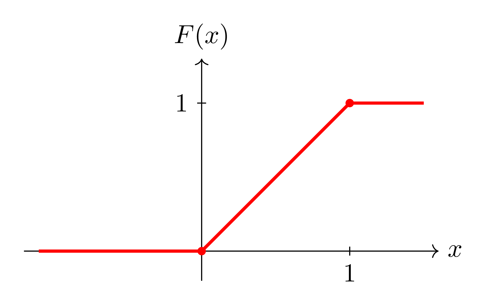
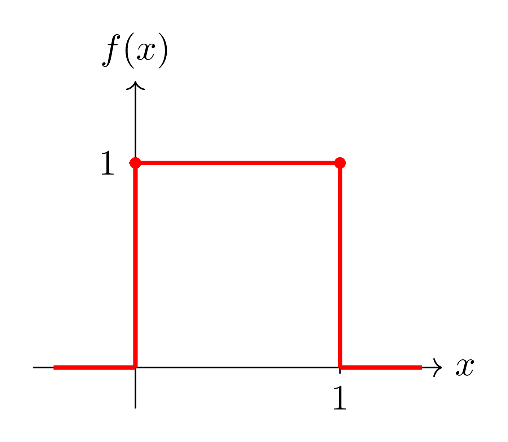
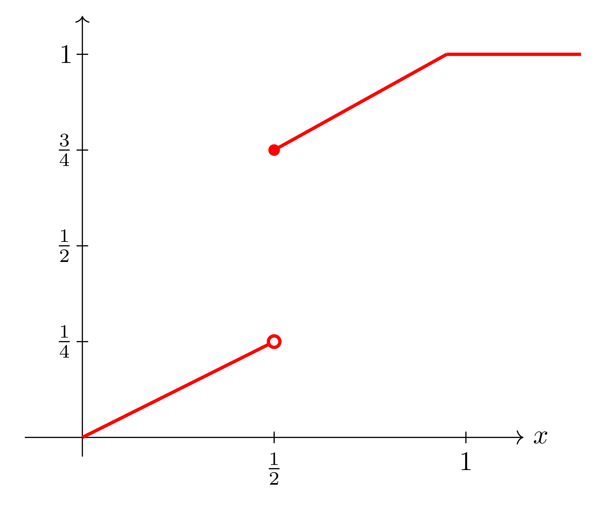

$\S$ Probability Density Functions
The definition of probability density function for continuous random variables is similar to that for discrete random variables, except for a couple of 'surprises'!
Definition). 3.4
A function $f: \mathbb{R} \rightarrow \mathbb{R}$ is called a probability density function of the continuous random variable $X$ if and only if
$$
P([a, b])=\int_{a}^{b} f(x) d x
$$
Often called densities or just PDFs.
Note that $f(c)$ does not give $P(X=c)$ as it does in the discrete case.
For continuous random variables we always have
$$
P(X=c)=0 \quad \text { for any } c \in \mathbb{R} \text {. }
$$
(e.g. the highway example).
Because of this, we can change 'same' of the values of $f(x)$ and still have a PDF for $X$. Hence, the PDF of $X$ is not uniquely defined as it is in the discrete case).
Similarly, it doesn't matter from the point of view of probability whether or not we include the endpts of an interval.
Theorem 3.4)
If $x$ is a continuous random variable and $a, b \in \mathbb{R}$, then
$$
P([a, b])=P([a, b))=P((a, b])=P((a, b)) .
$$
We also have an analogue of Theorem 3.1 from the last section:
Theorem 3.5)
A function $f$ can serve as the PDF of a continuous random variable $x$ if its values, $f(x)$, satisfy:
- $f(x) \geqslant 0,-\infty<x<\infty$
- $\int_{-\infty}^{\infty} f(x) d x=1$.
Example.)
If $x$ has the density
$$
f(x)=\left\{\begin{array}{l}
k e^{-3 x}, x>0 \\
0, x \leq 0
\end{array}\right.
$$
find $k$ and $P([0.5,1])$.
Solution
By Theorem 3.5, we must have that
$$
\int_{-\infty}^{\infty} f(x) d x=1 .
$$
Now $\int_{-\infty}^{\infty} f(x) d x=\int_{0}^{\infty} k e^{-3 x} d x$
$$
\begin{aligned}
& =\lim _{t \rightarrow \infty} \int_{0}^{t} k e^{-3 x} d x \\
& =k \lim _{t \rightarrow \infty} \int_{0}^{t} e^{-3 x} d x \\
& =k \lim _{t \rightarrow \infty}\left[\frac{e^{-3 x}}{-3}\right]_{0}^{t}
\end{aligned}
$$
$$
\begin{aligned}
& =k \lim _{t \rightarrow \infty}\left[\frac{e^{-3 t}}{-3}-\left(\frac{-e^{0}}{3}\right)\right] \\
& =k \lim _{t \rightarrow \infty}\left(\frac{1}{3}-\frac{e^{-3 t}}{3}\right) \\
& =\frac{k}{3} .
\end{aligned}
$$
Hence in order to have $\int_{-\infty}^{\infty} f(x) d x=1$, we need
$$
\begin{array}{ll}
& \frac{k}{3}=1 \\
& k=3 .
\end{array}
$$
We then get
$$
\begin{aligned}
P([0.5,1]) & =\int_{0.5}^{1} 3 e^{-3 x} d x=\left[-e^{-3 x}\right]_{0.5}^{1} \\
& =-e^{-3}+e^{-0.5} \approx 0.173 .
\end{aligned}
$$
Actually, the random variable in this example cannot assume negative values, but we extended its PDF to all of $\mathbb{R}$.
As in the discrete case, we are often interested in $P(X \leq x)$.
Definition 3.5)
If $x$ is a continuous random variable and the value of a PDF for $x$ at $t$ is $f(t)$, then the $f$ is given by
$$
F(x)=P(X \leq x)=\int_{-\infty}^{x} f(t) d t, \quad-\infty<t<\infty
$$
is called the cumulative distribution function (CDF) of $X$.
Note that although $f(t)$ is not uniquely defined, $F(x)$ is as $P(x \leq x)$ is uniquely defined!
As with the discrete case we can say that
$$
\begin{aligned}
& \lim _{x \rightarrow-\infty} F(x)=0, \lim _{x \rightarrow \infty} F(x)=1 \quad \text { and } \\
& a, b \in \mathbb{R}, a<b \Rightarrow F(a) \leq F(b)
\end{aligned}
$$
(Almost) Formally, a continuous random variable is one whose CDF is continuous.
We also have the following:
Theorem 3.6)
If $f(x), F(x)$ are a PDF and the CDF for a continous random variable $X$, then
$$
P([0, b])=F(b)-F(a), \quad a, b \in \mathbb{R}, \quad a \leq b
$$
and
$$
f(x)=\frac{d F(x)}{d x}
$$
Where this derivative exists.
$Proof.)$ (Not fully rigorus)
For the first part
$$
(-\infty, b]=(-\infty, a) \cup[a, b] \quad \text { (disjoint) }
$$
So
$$
\begin{aligned}
P((-\infty, b]) & =P((-\infty, a))+P([a, b]) \\
& =P((-\infty, a])+P([a, b]) \text { by Theorem } 3.4
\end{aligned}
$$
i.e. $\quad F(b)=F(a)+P([a, b])$, so
$P([a, b])=F(b)-F(a)$ as desired.
For the second part, assume $f$ is continuous at $x$.
⇒ If $t$ is near $x$, then $F(t) \approx f(x)$.
Now suppose $h$ is $\underset{(\neq 0)}{\text { small }}$ (tve or-ve).
$$
\begin{aligned}
\frac{F(x+h)-F(x)}{h} & =\frac{1}{h}\left(\int_{-\infty}^{x+h} f(t) d t-\int_{-\infty}^{x} f(t) d t\right) \\
& =\frac{1}{h} \int_{x}^{x+h} f(t) d t \\
& \approx \frac{1}{h} h f(x) \\
& =f(x) .
\end{aligned}
$$
Hence if $f$ is continuous at $x$,
$$\lim _{h \rightarrow 0} \frac{F(x+h)-F(x)}{h}$$ exists (ie $F$ is differentiable at $x$ )
and
$$
\frac{d F(x)}{d x}=f(x) .
$$
Example.)
Find the CDF of the random variable $X$ of the last example and use it to revaluate $P([0.5,1])$.
Solution.) For $x>0$
$$
F(x)=\int_{-\infty}^{x} f(t) d t=\int_{0}^{x} 3 e^{-3 t} d t=\left[-e^{-3 t}\right]_{0}^{x}=1-e^{-3 x}
$$
and since $F(x)=0$ for $x \leq 0$, we can write
$$
F(x)= \begin{cases}0, & x \leq 0 \\ 1-e^{-3 x}, & x>0\end{cases}
$$
By Theorem 3.9, $\quad P([0.5,1])=F(1)-F(0.5)$
$$
\begin{aligned}
& =\left(1-e^{-3}\right)-\left(1-e^{-1.5}\right) \\
= & e^{-1.5}-e^{-3} \\
= & 0.173
\end{aligned}
$$
(some conswer as before).
Example.)
Find a PDF for the random variable whose CDF is
$$
F(x)=\left\{\begin{array}{lc}
0, & x \leq 0 \\
x, & 0<x<1 \\
1, & x \geqslant 1
\end{array}\right.
$$

Solution). $F$ is differentiable everywhere except at 0,1 .
By Theorem 3.9, we have
$$
f(x)= \begin{cases}0, & x<0 \\ 1, & 0<x<1 \\ 0, & x>1\end{cases}
$$
Still need to define
$f$ at 0,1. However, as we saw earler, the particular values of
$f$ at 0,1 will not affect the probabilities of events.
So set
$f(0)=f(1)=1$.

We also have random variables which are neither discrete nor continuous.
e.g. Consider a random variable with the CDF

This random variable takes on uncountably many values so it is not discrete.
However, $P\left(\left\{\frac{1}{2}\right\}\right)=\frac{1}{2}>0$, so it is not continuous either (prob of $\{ \frac{1}{2} \} $ ) is the height of the jump in the CDF at $\frac{1}{2}$ ).
+
In our course, we shall limit ourselves to random variables which are discrete or continuous with the CDFs of the continuous random variables's being piecewise differentiable (i.e. differentiable on all of $\mathbb{R}$ except (possibly) at finitely many values),